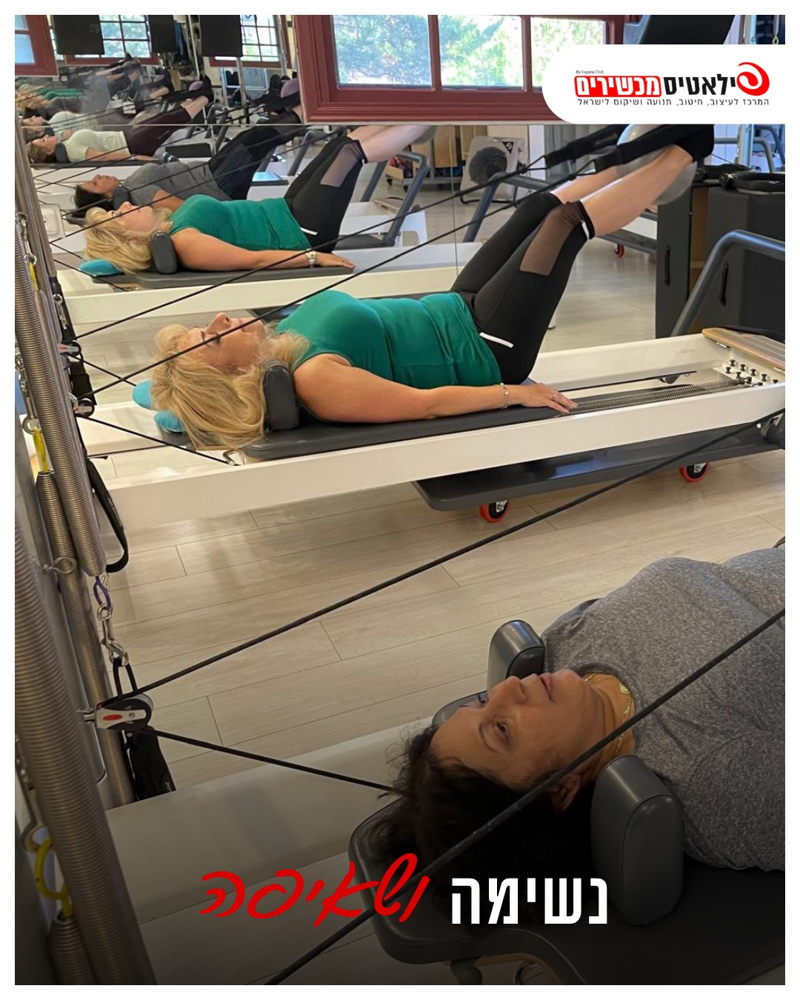

פיברומיאלגיה: ביום טוב עשית הכול, ושילמת על זה יומיים

את קמה בבוקר, והגוף סוף סוף בסדר.
אז את מנצלת את זה.
כביסה, קניות, ניקיון, אולי גם הליכה ארוכה.
ולמחרת את לא קמה מהמיטה.
וגם ביום שאחריו.
זה לא חוסר כוח רצון.
זה מעגל שיש לו שם, ויש דרך לצאת ממנו.
למה זה קורה
בפיברומיאלגיה מערכת העצבים מגבירה את אותות הכאב.
מה שאצל אחרת הוא מאמץ רגיל, אצלך הגוף מתרגם לכאב ולעייפות.
וכשעושים הרבה ביום אחד, הגוף מגיב בהתלקחות.
אחרי ההתלקחות נחים, הגוף נחלש עוד קצת, והיום הטוב הבא שוב נגמר במאמץ גדול מדי.
היציאה מהמעגל היא לא לעשות פחות.
היא לעשות אותו דבר בכל יום - גם ביום טוב, גם ביום פחות טוב.
מה המחקרים אומרים
- בהמלצות של איגוד הראומטולוגים האירופי (2016), פעילות גופנית היא ההמלצה היחידה שקיבלה את הדרגה החזקה ביותר לטיפול בפיברומיאלגיה.
- גם אימון אירובי עדין וגם חיזוק שרירים הפחיתו כאב ושיפרו תפקוד, כשהעומס עלה לאט.
- תנועה שמשלבת נשימה וקשב לגוף, כמו טאי צ'י ויוגה, הראתה שיפור בשינה ובעייפות אצל חלק מהמטופלות.
- ההתחלה היא החלק הרגיש. מי שמתחילה בעומס קטן מדי בשביל "להרגיש שעשתה משהו", מתמידה יותר.
איך מתחילים: הכלל של שני שלישים
בודקים כמה את מצליחה לעשות ביום רגיל, בלי שזה יתלקח אחר כך.
נגיד 9 דקות הליכה.
מתחילים בשני שלישים מזה - 6 דקות. כל יום.
ביום טוב לא מוסיפים. ביום פחות טוב לא מוותרים, רק מקצרים.
אחרי שבוע או שבועיים בלי התלקחות - מוסיפים דקה.
שלושה תרגילים ליום-יום
כל תרגיל - לאט, עם נשימה. אם הכאב מתגבר - עוצרים.
1. קימה מכיסא
יושבת בקצה כיסא יציב שצמוד לקיר.
בנשיפה - קמה. בשאיפה - מתיישבת לאט.
אפשר להיעזר בידיים.
5 פעמים, ולא יותר בשבוע הראשון.
2. שכיבת סמיכה על הקיר
עומדת מול קיר, צעד גדול ממנו.
כפות הידיים על הקיר, בגובה הכתפיים.
מכופפת מרפקים ומקרבת את החזה לקיר, ודוחפת חזרה.
5 פעמים.
3. נשיפה ארוכה
שוכבת על הגב, ברכיים כפופות, יד על הבטן.
שאיפה דרך האף, הבטן עולה.
נשיפה ארוכה דרך הפה, ארוכה מהשאיפה.
שתי דקות.
זה מרגיע את מערכת העצבים, ואפשר לעשות את זה גם ביום הכי קשה.
מתי הולכים קודם לרופא
לפני שמתחילים להתאמן - אם יש לך אחד מאלה:
- עוד לא קיבלת אבחנה. פיברומיאלגיה מאבחנים אחרי ששוללים מחלות אחרות, כמו בעיות בבלוטת התריס ומחלות מפרקים
- מפרקים נפוחים, אדומים או חמים
- חום, או ירידה במשקל בלי סיבה
- חולשה אמיתית בשרירים, לא רק כאב ועייפות
- תסמין חדש שלא הכרת, או שינוי פתאומי בכאב
- דיכאון או מחשבות קשות - גם זה בריאות, ומגיע לך טיפול
מה עושים בסטודיו
בסטודיו מתחילים מאיפה שאת נמצאת היום, לא מאיפה שהיית פעם.
על הרפורמר הקפיצים לוקחים חלק מהעומס, אז אפשר לחזק בלי להעמיס.
שיעור של 45 דקות, בקבוצה קטנה, ואני רואה כל אחת.
וביום פחות טוב - מגיעים, ואני מתאימה לך את השיעור.
אם הכאב הכרוני מגביל אותך, השאירי פרטים ונחזור אלייך בהקדם 👇